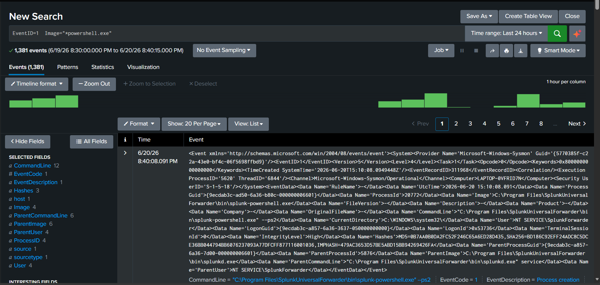
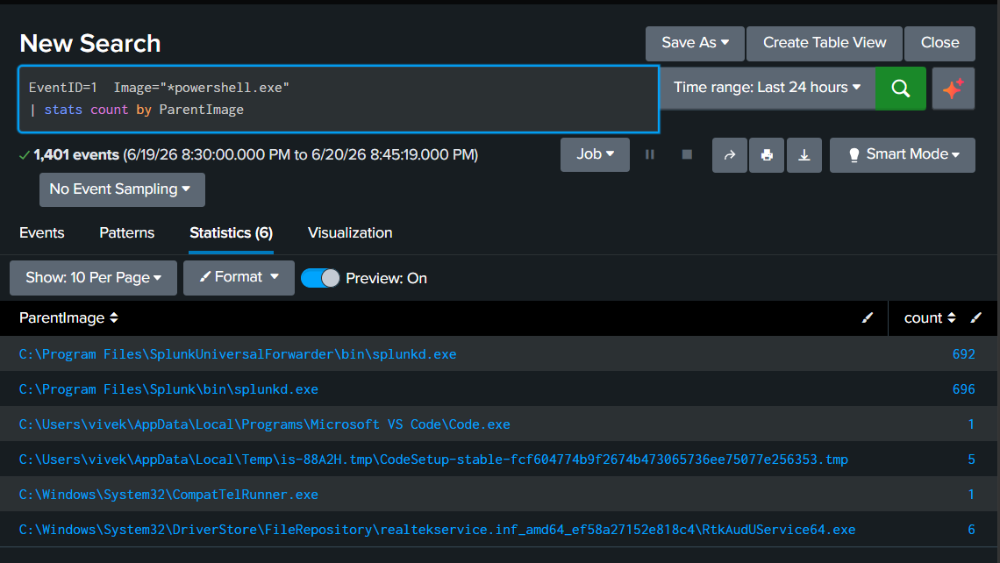
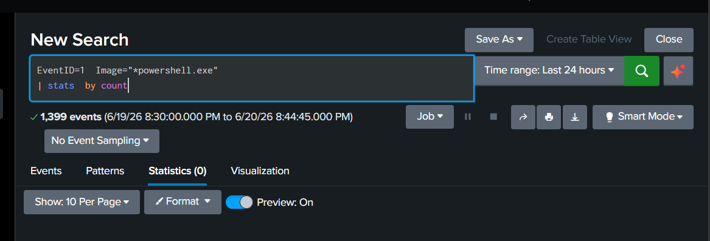
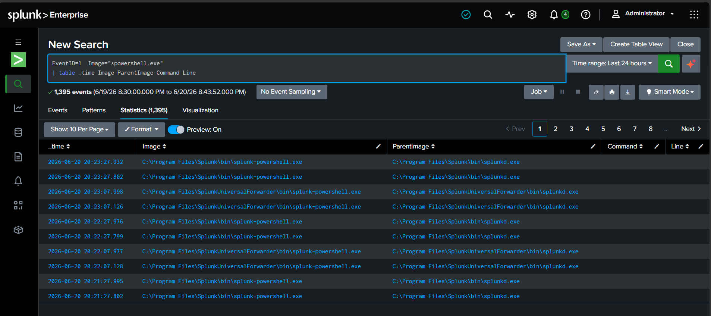

In this SOC investigation lab, Sysmon logs were collected and analyzed in Splunk to investigate PowerShell activity. The objective was to identify who executed PowerShell, determine the parent process, review command-line activity, and assess whether the activity was benign or suspicious.
The goal of this lab was to perform a real-world SOC investigation using Sysmon Event ID 1 (Process Creation). PowerShell executions were analyzed to identify user activity, parent-child process relationships, command-line arguments, and potential malicious behavior.
The following environment was used during this investigation:
The investigation was performed using the following workflow:
Example searches used during the investigation:
EventID=1 Image="*powershell.exe" EventID=1 Image="*powershell.exe" | stats count EventID=1 Image="*powershell.exe" | stats count by ParentImage EventID=1 Image="*powershell.exe" | table _time User Image ParentImage CommandLine EventID=1 Image="*powershell.exe" | stats count by User EventID=1 Image="*powershell.exe" | stats count by CommandLine
The following screenshots demonstrate the PowerShell investigation process performed in Splunk.
Retrieved all Sysmon Event ID 1 logs associated with PowerShell execution.

Identified which processes launched PowerShell on the system.

Determined which user accounts executed PowerShell.

Reviewed PowerShell command-line arguments to identify suspicious execution patterns.

A total of 1381 PowerShell process creation events were identified. Most executions originated from Splunk Enterprise and Splunk Universal Forwarder services. User attribution and command-line analysis revealed no evidence of malicious PowerShell activity. All observed activity was determined to be benign and related to system administration and lab operations.